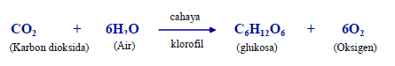

KOMPONEN BIOTIK
- Siswa dapat menjelaskan komponen biotik
komponen biotik merupakan komponen yang terdiri dari makhluk hidup sebagai pengisi suatu ekosistem. Semua organisme merupakan komponen biotik. Dalam ekosistem, komponen biotik dikelompokkan berdasarkan fungsinya, yaitu :
- Produsen
- Konsumen
- Herbivora adalah hewan pemakan tumbuhan. Hidupnya sangat bergantung pada tumbuhan secara langsung. Makhluk hidup yang memakan langsung tumbuhan disebut juga sebagai konsumen tingkat pertama. Contoh hewan-hewan pemakan tumbuhan adalah kerbau, domba, kambing, kelinci, sapi, dan lain sebagainya.
- Karnivora adalah makhluk hidup yang memakan daging makhluk hidup yang lain. Biasanya, karnivora memakan makhluk hidup herbifora. Dengan kata lain, karnivora adalah konsumen tingkat kedua. Contoh hewan yang termasuk carnivora adalah singa, harimau, dan buaya.
- Makhluk hidup yang memakan tumbuhan dan daging makhluk hidup lain disebut omnivora. Hewan omnivora merupakan pemakan segalanya (tumbuhan dan hewan). Contohnya babi, tikus, itik, ayam, dan manusia.
- Pengurai
- Rantai Makanan
- Produsen biasanya makhluk hidup autotrof yaitu merupakan makhluk hidup yang dapat membuat makanan sendiri dengan cara mengubah bahan anorganik menjadi bahan organik.
- Konsumen biasanya makluk hidup merupakan makhluk hidup yang tidak dapat membuat makanannya sendiri. Makhuk hidup heterotrof memperoleh sumber energinya dari memakan mahkluk hidup lain.
Produsen adalah organisme yang mampu menghasilkan zat makanan sendiri(autotrof). Organisme yang termasuk dalam kelompok produsen adalah tumbuhan. Tumbuhan menghasilkan makanan sendiri melalui fotosintesis. Proses fotosintesis menghasilkan zat makanan dan oksigen. Di dalam ekosistem semua tumbuhan hijau adalah produsen. Manusia dan hewan sangat bergantung kepada tumbuhan untuk kelangsungan hidupnya. Mengapa hal itu terjadi? Sinar matahari merupakan sumber energi utama bagi kehidupan di bumi. Sinar matahari digunakan oleh tumbuhan yang memiliki klorofi untuk membentu proses fotosintesis.
Perhatikan proses fotosintesis dibawah ini!

Pada proses ini, karbon dioksida (CO2) dan air (H2O) diubah dan diproses secara kimia sehingga menghasilkan karbohidrat sebagai bahan makanan. Zat makanan akan tersimpan pada daun, batang, akar, dan buah. O2 dilepas ke udara dimanfaatkan oleh organisme lain untuk pernafasan. Oleh karena itu tumbuhan berperan sebagai produsen, yaitu menyediakan makan bagi makhluk hidup lainnya. Tumbuhan dapat membuat makanan sendiri, sehingga disebut organisme autotrof.Sementara itu, bakteri tidak menggunakan sinar matahari untuk proses pembuatan makanannya, melainkan menggunakan cadangan energinya dalam senyawa kimia.proses pembuatan makanan pada bakteri tersebut disebut kemoautotrof.Kemoautotrof merupakan organisme sel tunggal yang membuat makanannya tidak dengan bantuan sinar matahari tetapi dengan menggunakan cadangan energi dalam senyawa kimia.Didalam ekosistem air yang berperan sebagai produsen adalah fitoplankton, yang merupakan tumbuhan hijau yang amat kecil yang melayang-layang di dalam air. Fitoplankton selalu menghasilkan bertonton makanan bagi hewan-hewan yang lain.
konsumen berarti pemakai. Organisme ini tidak dapat menghasilkan makanan sendiri. Untuk memenuhi kebutuhan makanannya, organisme ini tergantuk pada organisme lain. Oleh karena itu, konsumen disebut juga sebagai organisme heterotrof. Manusia dan hewan tidak dapat membuat makanan sendiri. Oleh karena itu, manusia dan hewan memeperoleh makanan dari tumbuhan sehingga disebut konsumen. Konsumen sangat bergantung pada produsen, begitu pula sebaliknya, konsumen mempengaruhi kelangsungan hidup produsen. Karbon dioksida dari sisa pernapasan hewan dan manusia dibutuhkan tumbuhan untuk proses fotosintesis (membuat makanan). Berdasarkan jenis makanannya, konsumen dibagi menjadi tiga macam, yaitu herbivora, karnivora, dan omnivora.
Pengurai atau decomposer adalah organisme yang berperan menguraikan bahan organik berasal yang telah mati ataupun hasil pembuangan sisa pencernaan menjadi bahan anorganik sederhana. Dengan kata lain, organisme yang telah mati serta sisa-sisa metabolism organisme akan terurai dan meresap ke dalam tanah menjadi unsur hara yang kemudian diserap oleh produsen.
Rantai makanan adalah perpindahan energi makanan dari sumber daya tumbuhan melalui seri organisme melalui jenjang makanan. rantai. Dalam rantai makanan ada 2 peran, yaitu